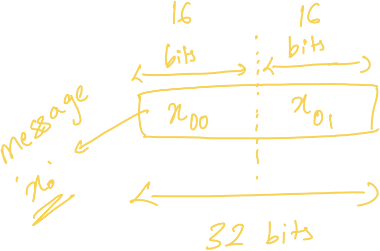

Oblivious Message Retrieval
Design of oblivious message retrieval
Thanks to Lev Stambler for pointing out errors in first draft and rechecking once fixed.
Oblivious message retrieval is a pretty cool application of homomorphic encryption using which you can route asynchronous message via a server to someone without leaking any metadata. It’s like sending a mail to someone without leaking to mail server who the actual recipient it. It has pretty useful applications ranging from messaging without leaking metadata to improving UX of privacy chains. It was first outlined in this paper and I have a somewhat efficient implementation of it here . Assuming that since you are reading this, you are obviously interested in learning how it works, let’s dive in the details!
Let’s define a few things that will come in handy later. We will refer to the server as big machine to which every user sends their messages and receives their messages from. Sender and recipient are defined as usual, that is the one who’s sending and the one who is receiving.
The way asynchronous messaging works today is very simple, the sender sends to the intended recipient via the server. For the server to recognise the recipient and send them their pending messages when they come online, the sender is additionally required to mention for whom the message is intended. This works, but the server learns all your messages and this isn’t what we are trying to achieve.
So how can we improve? Let’s do one thing, let the sender send the intended recipient’s identity along with message to the server, but this time hide it using encryption. And let’s term this as “clue”, since the recipient info is not in the clear. But if the recipient is encrypted, then how would the sever ever learn to whom to send this message to? This is only possible if the encryption scheme using which a clue is encrypted allows the server to check whether a given clue belongs to the user. If you are curious whether there exists such a scheme, then answer is yes! But for now let’s just define our own.
I will be calling this scheme FHE, which stands for fully homomorphic encryption, since it allows for computation over encrypted data.
Our FHE scheme is quite simple:
- We can encrypt a plaintext $pt \in \{0,1\}^n$ with $\text{pk} = \text{FHE.publicKey}(sk)$ corresponding to secret key $sk$ as:
$$ct = [\text{FHE.encrypt(pt[0], pk)}, ..., \text{FHE.encrypt(pt[n-1], pk)}]$$
- Given a ciphertext $ct$, which encrypts $pt$ as $\text{FHE.encrypt(pt, pk)}$ where $pk$ is public key corresponding to secret key $sk$, we can decrypt $ct$ as:
$$pt = [\text{FHE.decrypt(ct[0], sk)}, ..., \text{FHE.decrypt(ct[n-1], sk)}]$$
- We can perform additions, subtractions, and multiplications between two ciphertexts and a ciphertext and plaintext.
Since $pt \in \{0, 1\}^n$, if $ct$ encrypting $pt = [1]^n$ (ie a vector of size n filled with 1) is attempted to decrypt using incorrect $sk_{incorrect}$ then $\text{FHE.decrypt}(ct[i], sk_{incorrect})$ will equal 1 with probability $\frac{1}{2}$. Thus, the probability that decrypting with $sk_{incorrect}$ results into correct $pt = [1]^n$ equals $\frac{1}{2}^n$. This implies:
with probability $1 - \frac{1}{2}^n$. We can further increase $n$ to decrease false positives.
Using point (3) we can write a function that computes $\text{FHE.decrypt}$ homomorphically given an encrypted secret key. In other words, we can write FHE circuit $\text{FHE.function1(.,.)}$ such that $\text{FHE.function1}(\text{FHE.encrypt(pt[i], pk)}, ct_{sk}) = \text{FHE.encrypt}(pt[i], pk)$ with probability 1 when $ct_{sk}$ is correct encrypted secret key $sk$ and $pk$ is public key corresponding to $sk$, otherwise with probability $\frac{1}{2}$. Following from above we have,
only when $ct_{sk}$ is encryption of $sk$ and $pk$ is public key corresponding to $sk$ with high probability. Just for ease, let’s call the function above $\text{encryptsOne}(ct, ct_{sk})$.
This leads to our first simple construction of Oblivious message retrieval detection!
- Every user generates their public $pk_i$ using their secret key $sk_i$ as $pk_i = FHE.publicKey(sk_i)$ and makes it public, so that that anyone can send them messages. The user also needs to encrypt their secret key $sk_i$ as $ct_{sk_i} = FHE.encrypt(sk_i, sk_i)$ and send $ct_{sk_i}$ to the server, so that the server can homomorphically find clues intended for the user.
- To send a message to $user_i$, the sender first retrieves $user_i$’s corresponding public key $pk_i$ and encrypts $pt = [1]^n$ using it as $ct$ and sets $ct$ as the clue. The sender sends the clue and corresponding message to the server.
- The server collects several messages and clues over time. For a given user $user_i$, the server uses their corresponding $ct_{sk_i}$ and computes $encryptsOne(clue_j, ct_{sk_i})$ to obtain either $FHE.encrypt(1, pk_{i})$ or $FHE.encrypt(0, pk_i)$ for all collected clues. Since for $clue_{j}$ $encryptsOne(clue_j, ct_{sk_i})$ outputs $FHE.encrypt(1, pk_i)$ only when $clue_j$ was encrypted using $pk_i$, output ciphertext indicates whether $clue_j$ is intended for $user_i$. Let’s call these output ciphertexts as pertinency ciphertexts.
Server can send the entire pertinency ciphertexts collection to the user and the user can then decrypt to find the indices of messages that are for them. The index corresponding to ciphertext that decrypts to 1 is for the user and the rest are not. Assuming there exists a way for the user to query messages corresponding to an index without leaking index to the server (for example, using private information retrieval), user can then query their messages.
But there are many problems with the trivial construction that we described above. First being, it is not oblivious message RETRIEVAL since we don’t send the corresponding messages back to user. Second, pertinency ciphertext collection is of size of all messages. So if there are million messages, the user will have to download a million messages and a pertinency collection with a million pertinency ciphertexts. Another problem is size of ciphertexts. All FHE schemes produce ciphertexts that are really big. This implies each clue will be big as well which isn’t ideal. Another problem is computing $FHE.function1(.,.)$. For many FHE schemes (except TFHE,FHEW) homomorphic decryption of ciphertext is quite compute expensive (bootstrapping is expensive!) and naively implementing $FHE.function1(.,.)$ will result in impractical construction.
Transciphering to the rescue!
To construct something efficient we will need two different schemes, one that supports homomorphic operations over encrypted data (let’s just call this scheme A) and another one which we use to encrypt clues (scheme B). Additionally we require that encryption scheme we use for clues must be friendly to decrypt using the homomorphic encryption (HE) scheme.
Note: Notice that I have switched from using FHE to HE. This is because a FHE scheme (ie one that supports bootstrapping and indefinite compute) is not necessary for us, we can do away with levelled homormorphic encryption. Levelled HE simply means we can perform only a pre-defined number of homomorphic operations.
The idea remains the same as before, but now we use two different encryption schemes. The sender encrypts the clue using scheme B and clues are decrypted homomorphically to generate pertinency ciphertexts using scheme A. This technique of switching encryption scheme is generally known as transciphering.
PVW (scheme B)
PVW encryption is a similar to Regev LWE encryption and turns out PVW satisfies all the property that we want scheme B to have. Its decryption function is simply a matrix vector multiplication over a prime modulus (ie a bunch of inner products between rows vectors of matrix and another vector), which is easy to implement using BFV/BGV FHE scheme. Its ciphertext size is quite small (~around 1kb for 120 bit security). Its plaintext is a vector of bits. Thus we can say that a clue corresponds to encrypting a vector filled with 0s and a clue is intended for a given user with PVW secret key $sk_{pvw}$ only when clue’s ciphertext decrypts to a vector filled with 0, otherwise not.
To understand OMR construction that we will build, I will briefly describe PVW parameters and encryption, decryption functions.
PVW is parameterised using 5 parameters, $n$, $l$, ciphertext modulus $q$, $m$, and gaussian distribution $\sigma$ and must be chosen such that they provide adequate security. For example, in OMR implementation we have set $n$ as 450, $l$ as 4, $m$ as 16000, $q$ as 65537, and $\sigma$ of normal distribution as 1.3. Additionally, since we decrypt PVW ciphertext using its decryption circuit in our HE scheme, the plaintext space of HE scheme must equal the ciphertext modulus $q$ of PVW.
The plaintext $pt$ of PVW is a vector $\in \{0,1\}^l$ and secret key $sk$ is $\in \mathbb{Z}_q^{n \times l}$.
To generate public key $pk \in (\mathbb{Z}_q^{l \times m}, \mathbb{Z}_q^{n \times m})$, sample randomly $A \in \mathbb{Z}_q^{n\times m}$, then sample error matrix $E$ from gaussian distribution with standard deviation $\sigma$ ($E \in \chi_e^{l \times m}$). Set $pk$ as
To encrypt a message vector $t \in \{0,1\}^{l}$ using $pk$, first calculate $t' = round(\frac{3q}{4})\cdot t$. Then sample $u$ as ephemeral key $\in \{0,1\}^m$ and set $ct$ as:
To decrypt ciphertext $ct$, calculate:
To get message $t$, set element in $t$ to 0 if its corresponding element in $t''$ is $\leq q/2$ otherwise set it to 1.
If you are familiar with costs of homomorphic operations, which I will introduce in a bit, there are two difficult bits in implementing the decryption of PVW homomorphically:
- Calculating $sk^T ct[1]$. Since matrix vector multiplication boils down to inner products between row vectors of $sk^T$ and vector $ct[1]$, this requires $l$ inner products of vectors with length $n$.
- Checking $\leq q/2$ is not trivial. In fact, it requires an entire polynomial evaluation of degree equivalent to $q - 1$.
Since in OMR implementation we consider encryption of vector of 0s as a clue, we modify checking $\leq q/2$ to reduce false positive. With clues as vector of 0s, a clue must decrypt to 0s only when it is decrypted using $sk$ corresponding to public key $pk$ with which clue was generated, otherwise not with high probability. To further make false positive negligible, we first shift $ct[0] - sk^Tct[1]$ towards 0 by subtracting $\frac{q}{4}$ and restrict expected range for 0 to $q - 850 \leq x \leq 850$. We also switch the bits when calculating the range function, so that 1 indicates that clue is intended for user (ie clue is encryption of 0s using user’s $pk$) and 0 indicates not.
Instead of checking $\leq \frac{q}{2}$, we evaluate $f(x)$ as the range function.
A short primer on BFV HE scheme (scheme A)
We will be using BFV homomorphic encryption scheme for our construction because it enables quite efficient operations over a prime modulus (remember? PVW decryption algorithm works over a prime modulus!). Additionally, BFV ciphertext can be viewed as a vector of slots where homomophic operations on a BFV ciphertext corresponds to operations over values in slot modulo the prime modulus. Thus cost of single BFV homomorphic operation is amortised over homomoprhic operations over many slots. Since a single BFV ciphertext may contain many thousands of slots (for ex, in OMR implementation there are $2^{15}$ slots), amortisation benefits immensely. We usually refer to this property of BFV as SIMD (ie single input multiple data).
A BFV ciphertext with 8 SIMD slots
With plaintext prime modulus set to $t$, homomorphic $\times, +, -$ between two BFV ciphertext corresponds to operations modulo $t$ over values in slots.
We can additionally rotate BFV ciphertext left or right. However, the rotation does not wrap around the entire length of vector, instead it wraps around halfway through the vector.
Rotating BFV ciphertext to the left by 1. For rotations, view BFV ciphertext equally split into upper vector and lower vector and rotations in the two vectors are independent.
Note: I know it makes more sense to call left rotation as up and right rotation as down. But in most cases the ciphertext vector is viewed as a matrix with two rows split halfway, where denoting rotations as left/right makes more sense.
Moreover, we can swap upper vector and lower vector of a BFV ciphertext. We refer to this as row swap (because BFV ciphertext can be viewed as a matrix with two row vectors and swapping upper vector and lower vector corresponds to swapping matrix’s row vectors).
Decrypting PVW ciphertext homomorphically using BFV
Clues are encrypted as vector filled with 0s using receiver’s corresponding PVW public key. Receiver can decrypt all clues themselves to find the clues intended for them. If a given clue decrypts to a vector with all 0s, then the clue is for them, otherwise not. However, the server does not has access to receiver’s PVW secret key, due to which, we decrypt the clues homomorphically using BFV. In short we transcipher clues from PVW to BFV and switch clues from encryption under PVW scheme to encryption under BFV scheme. One thing to note here is that user is expected to have two diffferent secret keys, one for BFV and another for PVW. Moreover, for transciphering (as you will learn in a bit) user needs to encrypt their PVW secret key under BFV scheme using their BFV secret key and send it to server.
Calculating $sk^T \cdot ct[1]$:
Computing $sk^T \cdot ct[1]$ comprises of $l$ inner products between vectors of size $n$. Since a user can’t send their $sk_{PVW}$ to server in clear, they encrypt their row vectors of $sk^T_{PVW}$ as $l$ BFV ciphertexts and send the ciphertexts to server.
Calculating $sk^Tct[1]$ in clear. Notice $i^{th}$ row of resulting vector corresponds to inner product between $i^{th}$ row of $sk^T$ and $ct[1]$
Thus to calculate $sk^Tct[1]$ with encryptions of row vectors of $sk^T$ we need a way to homomorphically compute inner products between a secret vector $sk^T[i]$ and a clear vector $ct[1]$. We can do this by encrypting the secret vector in slots of BFV ciphertext and encoding the clear vector in first slots of multiple BFV plaintexts. Then we can iteratively rotate BFV ciphertext to left by 1, multiply it with corresponding BFV plaintext and add to resulting ciphertext. After $n$ iterations (ie length of vectors), resulting ciphertext will contain inner product of secret vector and clear vector in the first slot.
First row of $sk^T$ encrypted as BFV ciphertext in multiple slots.
View each column as a separate BFV plaintext. Values of clear vector $ct[1]$ are encoded in first slot of different BFV plaintexts.
$0^{th}$ iteration
After every iteration we rotate secret vector ciphertext to the left by 1 and then multiply with next plaintext in sequence. For example, after $0^{th}$ iteration we rotate $sk$ and then multiply it with BFV plaintext encoding $ct[1]_1$ in its first slot.
After $n^{th}$ iteration (n is length of vector) the resulting ciphertext will have encryption of inner sum in the first slot
However, the approach above is quite wasteful. We only utilise a single BFV ciphertext for a single inner product. Instead we can utilise it for as many as $N$ (as many there are slots) inner products, allowing us to decrypt $N$ PVW ciphertexts at once. This fits well for us because it amortises cost of calculating $N$ inner products to 1 inner product. But to achieve this, we will have to modify the way we encrypt secret vector in BFV ciphertext slots and clear vector(s) in BFV plaintext a bit.
Let’s assume both BFV ciphertext slots count and $n$ is $2^9=512$ and rotations don’t wrap around the middle of ciphertext, instead they wrap around as usual ($n$ can be any power of 2. I have taken $2^9$ to stay in line with OMR implementation). We encrypt secret rows of $sk^T$ as before in BFV ciphertexts. Denoting $ct[1]$ of $i^{th}$ PVW ciphertext as $ct^i[1]$, we will create $2^9$ BFV plaintexts and view them as a matrix. We will first rotate $ct^i[1]$ by $i$ to the left and then encode it in $i^{th}$ row of BFV plaintext matrix.
Secret vector $sk^T[0]$ is encrypted in BFV ciphertext slots
Viewing multiple BFV plaintexts as matrix, $ct^i[1]$ is rotated to left by $i$ and is encoded in $i^{th}$ row.
Repeating the same procedure as before, we iteratively rotate secret vector ciphertext and multiply it with next BFV plaintext in sequence and accumulate the result in accumulator ciphertext. After 512 iterations the accumulator ciphertext will have inner product of secret vector and $ct^i[1]$ and $i^{th}$ slot.
Accumulator ciphertext on the left, after $0^{th}$ iteration.
After $0^{th}$ iteration, we rotate BFV ciphertext of $sk^T[0]$ to left by 1 and multiply it with next BFV plaintext in sequence. Then we accumulate it again into accumulator ciphertext.
After 512 iterations, accumulator ciphertext will have inner product of $sk^T[0]$ and $ct^i[1]$ in $i^{th}$ slot
But what if no. of BFV slots are greater than 512 and aren’t equal to $n$? For example, in implementation $N$ is $2^{15}$ and $n$ is only 450. Also, how do you deal with the fact the BFV rotations wrap around the mid point? Turns out, way to get around both issues is to assume that vector length is next power of 2 and pad the vectors with 0s. For example, for when $N=2^{15}$ and $n=450$, we assume vector length is 512 and divide BFV slots in sets of consecutive 512 slots. Then we repeat the what we did for each set. After 512 iterations, the accumulator ciphertext will encrypt result of $N$ inner products.
We divide BFV ciphertext slots in sets of 512, then we pad $sk^T[0]$ with 0s such that its length is 512 and encrypt it such that padded $sk^T[0]$ vector is in each set.
We pad all $ct[1]$s with 0s to make their length equal to 512. We then divide the rows of BFV plaintext matrix in sets of 512. In each set we encode $i^{th}$ clear vector $ct^i[1]$ in $i^{th}$ row. With $N=2^{15}, n=450$ notice that a single set packs in 512 inner products and a single BFV ciphertext packs in $2^{15}$ inner products.
With $N=2^{15}$, after 512 iterations accumulator ciphertexts will contain $2^{15}$ inner products in its slots.
Like we have calculated inner product between encrypted $sk^T[0]$ and many $ct[1]$ vectors, we can calculate inner product between rest of encrypted rows of $sk^T$ and $ct[1]$ vectors. After which, we will obtain $l$ accumulator ciphertexts where accumulator ciphertext at index $j$ contains inner product between $sk^T[j]$ and $ct^i[1]$ in $i^{th}$ slot. Moreover, if we view $l$ accumulator ciphertexts as a matrix then $i^{th}$ row encrypts matrix vector product of $sk^Tct^i[1]$.
$l$ accumulator ciphertexts viewed as a matrix. Notice that $i^{th}$ row contains matrix vector product between $sk^Tct^i[1]$.
Calculating $ct[0] - sk^Tct[1]$:
Once we have $l$ accumulator ciphertexts, calculating $ct^i[0] - sk^Tct^i[1]$ is quite easy. We construct $l$ BFV plaintexts in which we encode $j^{th}$ element of $ct^i[0]$ in $i^{th}$ slot of $j^{th}$ plaintext. In other words, when we view multiple $l$ BFV plaintexts as a matrix we encode $ct^i[0]$ in $i^{th}$ row.
$i^{th}$ row of plaintext matrix encodes $ct^i[0]$. Subtracting $l$ BFV ciphertext from $l$ BFV plaintexts results in $l$ ciphertexts that contains $ct^i[0] - sk^Tct^i[1]$ in $i^{th}$ row. That is, decrypted vector of $i^{th}$ PVW ciphertext in $i^{th}$ row.
Range function $f_r(x)$:
After calculating $ct[0] - sk^Tct[1]$ homomorphically we end up with $l$ ciphertexts where $i^{th}$ row encrypts $ct^i[0] - sk^T ct^i[1]$ of $i^{th}$ PVW ciphertext. To finish PVW decryption procedure we need to map each element in ciphertexts to 1 or 0 using range function $f_r(x)$. However, due to the fact that in BFV we only have access to homomorphic additions, subtractions, and multiplications over some prime modulus $t$, performing comparisons is not trivial and requires evaluating a polynomial. A way to evaluate any arbitrary function over a value modulus prime $t$ is described in section 3 (Equation 1) of this paper. Since homomorphic operations over BFV ciphertext correspond to operations over values in its slots modulo prime $t$, we can simply evaluate the function described in the paper over our ciphertexts.
For any $f: \mathbb{F}_t \rightarrow \mathbb{F}_t$
Any arbitrary function $f$ with $X \in [0,t)$ can be evaluated using $P_f(X)$.
Note: $P_f(X)$ is simply derived from following equality function over a field which uses fermat’s little theorem:
If we simplify $P_f(X)$, we can re-write it as a polynomial of degree $t-1$. But notice that if $t$ is big (in OMR $t$ is set to 65537 since PVW parameter $q$ is set to 65537) then evaluating the polynomial naively may require many ciphertext by ciphertext multiplications, resulting in very inefficient implementation. This is where Paterson Stockmeyer method of polynomial evaluation comes handy. Paterson Stockmeyer method is an easy way to evaluate polynomial with reduced no. of multiplications. For example, evaluating a polynomial of degree 65536 (ie $t$ = 65537) on encrypted input $x$ using Paterson Stockmeyer method takes 765 ciphertext multiplications.
Peterson stockmeyer
Let’s set $t$ = 65537. Thus we have to evaluate a polynomial of degree 65536. Now notice the following equality:
Using the equality we only require two different set of powers, first $x, x^2, x^3, ..., x^{256}$ and second $x^{256}, (x^{256})^2, ..., (x^{256})^{255}$. Once we have the two sets ready we can use additions and additional 255 multiplications to evaluate entire polynomial.
Calculating first set of powers: The simplest way to calculate $x, ..., x^{256}$ is binary exponentiation:
let powers_x = [];
for i in 2...256 {
let value = i;
let res = 1;
let base = x;
while value != 0 {
if value & 1 == 1 {
res = base * res;
}
value >>= 1;
base <<= 1;
}
powers_x.push(res);
}
This requires 255 multiplications and if 255 seems non-intuitive then viewing binary exponentiation following way might help:
Write powers of 2 in range $[4,128]$ in binary 4 => 100 8 => 1000 16 => 10000 32 => 100000 64 => 1000000 128 => 10000000
Now notice that any value between any 2 powers of 2 can be calculated as multiplication of the previous power of 2 and a value smaller than the previous power of 2. Thus to calculate powers $x^2,...,x^{256}$ we will require 255 multiplications, one for each value in range $[2, 256]$.
The highest power of 2 that is less than 70 is 64 and 70 can be written as sum of 64 + 6. Thus $x^{70}=x^{64}x^6$.
Viewing binary exponentiation through this lens also hints something about noise growth. Since noise in resulting ciphertext depends on maximum of noise of the two input ciphertexts, our resulting noise is defined by noise of base power ciphertexts. As the highest base power we need is 128 our maximum noise growth will be equivalent of $log_2(128) + 1$ (ie 8) multiplications.
To calculate the second set of powers $x^{256}...(x^{256})^{255}$, we set $x = x^{256}$ and calculate the powers the same way as in first set.
Once we have both set of powers (ie $x, ..., x^{256}$ and $x^{256}, ..., (x^{256})^{255}$), we can evaluate the polynomial corresponding to range function $f_r(x)$ using the right hand side of equality defined above. After evaluating $f_r(x)$ homomorphically on all $l$ ciphertexts each element in the slot of all ciphertexts must either encrypt 1 or 0. Viewing $l$ ciphertexts as matrix, $i^{th}$ row corresponds to decryption of $i^{th}$ clue. Since a clue is intended for user only when all elements in decrypted vector are 1s, we can multiply $l$ ciphertexts together to get a single decrypted ciphertext which encrypts 1 in $i^{th}$ slot if $i^{th}$ clue is intended for user, otherwise 0.
Packing Pertinency Bits!
A single BFV ciphertext slot can encode a plaintext values in range $[0,t)$. Thus a single slot can contain as many as $\log{t}$ bits. So simply sending decrypted ciphertext containing a single bit in each slot back to user is quite wasteful. Which is why we are going to pack as many as $\log t$ bits within a single slot and then send it back to user. For this we will have to first isolate encrypted pertinency bit in each slot into its own individual ciphertext which encrypts the same pertinency bit in all slots. Let’s call these ciphertexts as pertinency ciphertexts.
Unpacking pertinency bits into pertinency ciphertexts
To isolate pertinency bit at $i^{th}$ index in decrypted ciphertext, we simply multiply it with a plaintext with all slots set to 0, except the $i^{th}$ slot which is set to 1.
Multiplying decrypted ciphertext encrypting all pertinency bits with plaintext that encodes 1 only at $i^{th}$ slot results in pertinency ciphertext encrypting $i^{th}$ pertinency bit at $i^{th}$ slot.
Inner sum of vectors
To populate all the slots of a pertinency ciphertext that encrypts $i^{th}$ bit at $i^{th}$ slot with $i^{th}$ bit in all slots we will use inner sum of vectors. Inner sum simply sums elements in all the slots and sets the summation as value of each slot.
Evaluating InnerSum over encrypted ciphertext results in a ciphertext encrypting summation of values of all slots of input ciphertext in each slot.
For an intuitive understanding of how inner sum works, consider a BFV ciphertext with 8 slots.
Starting with BFV ciphertext with 8 slots on left, we rotate it left by 1 and add it by itself.
We rotate the ciphertext in previous step by 2 to the left and add it to itself. Notice that we end up with ciphertext that encrypts summation of upper half slots of initial ciphertext in each of upper half slots and encrypts summation of lower half slots of initial ciphertext in each of lower half. We are now just left with to add upper half to lower half
Finally we RowSwap (ie swap upper and lower half) ciphertext from previous step and add it to itself
More generally, evaluating inner sum of a BFV ciphertext requires to $\log N - 1$ rotations, 1 row swap, and $\log N$ additions.
// ct: BFV ciphertext
// N: no. of slots in BFV ciphertext
fn inner_sum(ct, N) {
let i = 1;
while i < N/2 {
ct = ct + rotate(ct, i);
i *= 2;
}
ct = ct + row_swap(ct);
}
Inner sum function. rotate rotates the BFV ciphertext to left by i and row_swap swaps the rows (ie swaps upper half and lower half of BFV ciphertext)
After unpacking each slot in decrypted ciphertext as pertinency ciphertext, we calculate inner sum of each pertinency ciphertext. Thus each pertinency ciphertext either encrypts 1s or 0s in all slots.
Packing the bits
An easy way to figure out how to pack bits in a BFV ciphertext with $N$ slots, is to think of the ciphertext as $N$ rows with each row having $\log t$ columns.
BFV ciphertext viewed as a matrix of bits. It has $N$ rows and $\log t$ columns.
To understand how to pack the bits in the matrix, let’s take an example. We will set $N=2^{15}$ and $t=2^{16}+1$, thus $\log t = 16$ (these are the parameters used in OMR implementation).
We insert pertinency bit of $i^{th}$ message at position $b_{i/16, i\mod 16}$. For example, pertinency bit corresponding to $0^{th}$ message can be inserted at position $b_{0,0}$ and bit corresponding to $18^{th}$ message can be inserted at position $b_{1,2}$.
To insert a bit at position $b_{x,y}$, we simply need to scale the bit such that bit is at position $y$ and insert it in $x^{th}$ slot. Since bit’s pertinency ciphertext encrypts the bit at all slots, we simply need to multiply it by a plaintext that encodes $2^{y}$ at $x^{th}$ and add it to packed ciphertext.
Leftmost ciphertext is packed pertinency ciphertext after inserting $18^{th}$ pertinency bit. To add pertinency bit corresponding to $18^{th}$ message to packed pertinency ciphertext, encode $2^{2}$ at slot index 1 in BFV plaintext, multiply plaintext with $18^{th}$ pertinency ciphertext and add it to packed pertinency ciphertext.
Another crucial point to note is that packing enables us to pack as many as $N(\log t)$ pertinency bits in a single BFV ciphertext. For example, in OMR implementation we can pack upto $2^{19}$ pertinency bits in single BFV ciphertext.
Once we are done packing all pertinency ciphertexts into a single packed pertinency ciphertext we can send over the packed pertinency ciphertext to user. User can then decrypt the received ciphertext to find indices of message pertinent to them. However, we are yet to send messages back to user without requiring any additional interaction.
Linear equations for messages
To understand how to send messages corresponding to pertinent clues back to user, it will be helpful to assume that a message fits within plaintext space of a slot (message is in range $[0,t)$). Moreover, considering the fact that only a limited no. of messages will be pertinent to a given user, we can ask the user to fix maximum ceiling $k$ on no. of messages they may receive within a given time frame.
Full rank matrices
Consider a square matrix $M \in F_q^{b \times b}$ with each element uniformly sampled from finite field defined by prime $q$. Additionally, think of the matrix consisting of system of linear combinations with $b$ variables where each row represents a single linear combination. The matrix is called full rank if we can recover all $b$ variables by solving the linear combinations. Values of the variables can be recovered by reducing the matrix to row-echelon form using gaussian elimination.
$M$ is full rank matrix with weights $w_{0,0}, ..., w_{b-1,b-1}$ sampled uniformly random from $F_q$ with variables $x_0, ..., x_{b-1}$ also $\in F_q$.
Given $t_0, ..., t_{b-1}$ (ie result of linear combination of each row) we can recover variables $x_0, ..., x_{b-1}$ be reducing $M$ to row echelon form using gaussian elimination.
In general, for matrix to be full rank its dimension should be at-least $b \times b$ for $b$ variables. However, there are results that show that when working on a finite field and assuming that only $k$ variables are pre-determined to be non-zero we can potentially reduce the no. of linear combinations, ie rows of $M$, to a value closer to count of $k$ while assuring that matrix is full rank (with high probability). This implies that if we have linear combinations as:
where many of the variables can be pre-determined to be 0, then we can recover non-zero $k$ variables with $m$ linear combinations (instead of $S$) where $m$ is closer to but greater than $k$.
Consider the equation above and assume that the entire set of messages is of size $S$. Each element in weight matrix, $w_{0,0}, ..., w_{m-1, S-1}$ is sampled uniformly from $F_q$. Each row in message matrix is same and is equal to all messages $x_0, ..., x_{S-1}$. Each row in pertinency matrix is same and sets $i^{th}$ pertinency bit at $i^{th}$ column. Element wise multiplication of weight matrix, message matrix, and pertinency matrix will result in a matrix that has only $k$ (assuming only $k$ messages are pertinent) variables that are non-zero, thus the matrix will be full rank (with high probability). Moreover, someone with access to weight matrix, pertinency matrix, and linear combinations of each row of the resulting matrix (ie $t_0,...,t_{m-1}$) can solve for $x$ values corresponding to non-zero pertinency bits of message matrix using gaussian elimination.
Now, instead of randomly generating weight matrix, we can first seed a pseudo random generator with a seed and then generate the weight matrix. We can then send seed along with packed pertinency ciphertext back to user, so that they can generate weight matrix and pertinency matrix themselves. To send linear combinations of each row in resulting matrix to user, we will have to compute the linear combinations homomorphically because pertinency matrix is encrypted.
Computing linear combinations homomorphically
Calculating linear combinations homomorphically is trivial if we encode each column in weight matrix and message matrix as separate BFV plaintexts and then multiply them with corresponding pertinency ciphertext. Then add all the results.
We first multiply elements of weight matrix and message matrix and encode each column of resulting matrix in BFV plaintext. Then we multiply each BFV plaintext with corresponding pertinency ciphertext and add all of them up. We end up with linear combinations $t_0,..., t_m$ in slots of resulting BFV ciphertext on left.
After computing linear combinations homomorphically, we send the resulting ciphertext (the one on left above), seed for weight matrix, and packed pertinency ciphertext to user. User can then decrypt the ciphertexts, construct linear equations and solve for them using gaussian elimination. However, if there happen to be more than $k$ message pertinent to user, equations will be unsolvable.
For implementation to be useful, it is important to set ceiling $k$ appropriately. For example, in OMR implementation we have set $k$ to 50 and $m$ to 51, which results in probability of not having a full rank matrix (ie unsolvable linear equations for $x$) even with $\leq k$ non-zero pertinent messages of approximately $2^{-50}$.
Larger message size
Up till now we assumed that a single message fits a single BFV plaintext slot, but in most practical applications it won’t. To accommodate larger messages, we can split the large message into chunks that can fit in a single plaintext slot and construct multiple sets of $m$ linear combinations, one for each chunk. So if a single message fits in $a$ slots (message splits into $a$ chunks), we will construct $a$ different sets each consisting of $m$ linear combinations.

If a message is of size 32 bits and a plaintext slot can fit in 16 bits ($t = 65537, \log t = 16$), then we split message into two chunks each of size 16 bits. $x_0$ is split into $x_{0,0}$ and $x_{0,1}$.
A single message $x_i$ is split into 2 chunks $x_{i,0}$ and $x_{i,1}$, thus we construct 2 sets of linear combinations homomorphically. Notice that I have re-used weights across linear combinations for different chunks. It’s ok to do so since linear combinations for chunks belong to different sets
Note: paper improves upon having to insert each weight and message combination to all $m$ linear combinations using sparse random linear combinations with which it is sufficient to insert weight and message combinations for each message to only a few linear combinations at the cost increasing $m$ (in practice, $m = k * 2$ suffices). However, due to the fact that in BFV we can compute several linear combinations at the cost of one, the overhead of adding weight and message combination to each linear combination is negligible.